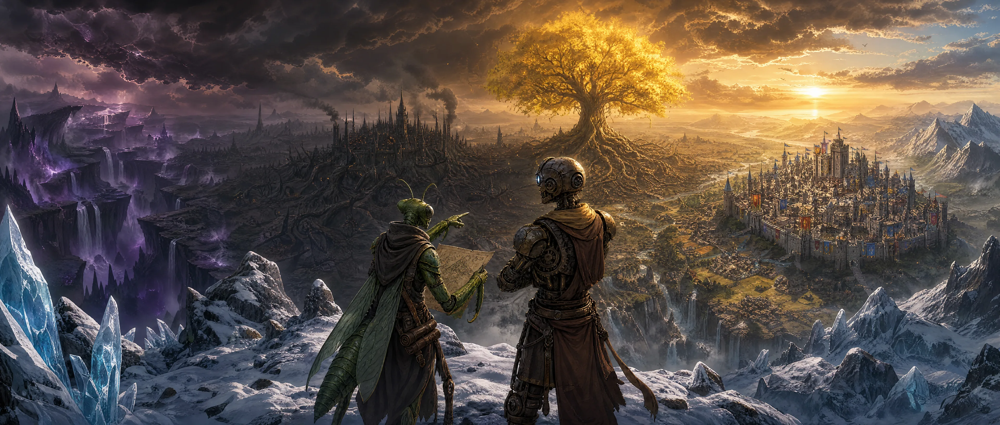

Khalkaria
Sistema de RPG de Mesa

📚 Navegação Rápida
Sistema Base
Atributos, Perícias, Combate, Armas, Magias e Progressão
Raças
Humano, Anão, Autômato, Gruto, Inseto, Dryad, Corrompido
Classes
Espadachim, Batedor, Brutalista, Teurgo, Alquimista, Monge, Artilheiro
Origens
19 origens que definem o passado do seu personagem
O Limiar
Sistema de progressão e customização com Pontos do Limiar e O Abismo
Magias
100 magias em 5 níveis e 4 escolas, regras, intensidade e modulações
Condições
Estados de combate, condições mentais, físicas e exaustão
O Bazar
727 itens de Kharavel — armas, armaduras, consumíveis, relíquias e bugigangas, com busca e filtros
🎲 Criação de Personagem
- Role Atributos: Role 4d6, retire o pior e anote o valor. Faça isso 5 vezes e distribua entre Força, Destreza, Constituição, Inteligência e Sabedoria. Se a soma de uma rolagem der menos de 8, role os 4 dados novamente: por isso cada valor rolado fica entre 8 e 18. Você pode retirar 1 ponto de um atributo e adicionar a outro. Depois, a cada nível (2 a 5), você recebe +2 pontos de atributo (O Limiar).
- Escolha sua Raça: Cada raça fornece bônus de atributo, perícias e características únicas
- Escolha sua Classe: Define seus Status, Técnicas, Ramos e estilo de combate
- Escolha sua Origem: Define seu passado, perícias e equipamento inicial
- Finalize: Calcule Status, escolha Técnicas e Marcas de Ramo
❤️ Status Universais
Saúde
Condição física. Ao reduzir a 0 ou menos, você recebe a condição Morrendo.
Stamina
Vigor perante o cansaço. Perícias e habilidades utilizam Stamina. Ao reduzir a 0, fica Exaurido.
Éter
Energia primordial e sanidade. Ao reduzir a 0 ou menos fica Oco.
⚔️ Classes
| Classe | Recurso Principal | Estilo |
|---|---|---|
| Espadachim | Stamina | Combate com espadas, timing, retaliação |
| Batedor | Instinto | Exploração, furtividade, reconhecimento |
| Brutalista | Brutalidade | Tanque, linha de frente, presença intimidadora |
| Teurgo | Éter | Magia, escolas primordiais, conjuração |
| Alquimista | Reagentes | Preparação química, suporte, crafting |
| Monge | Fluxo | Combate desarmado, mobilidade, anti-magia |
| Artilheiro | Concentração | Combate à distância, precisão, controle |
📈 Progressão de Nível
| Nível | XP | Benefícios |
|---|---|---|
| 1 | — | 4 Técnicas de Classe, Características de Raça e 1 Habilidade de Origem |
| 2 | 150 | 5 Técnicas de Classe, Técnicas Tier 1 de Classe, +4 Pontos do Limiar |
| 3 | 400 | 6 Técnicas de Classe, 1 Marca de Classe, +4 Pontos do Limiar |
| 4 | 1000 | 7 Técnicas de Classe, Técnicas Tier 2 de Classe, 2 Marcas de Classe, +4 Pontos do Limiar |
| 5 | 2000 | 8 Técnicas de Classe, Técnicas Tier 3 de Classe, 3 Marcas de Classe, +4 Pontos do Limiar |